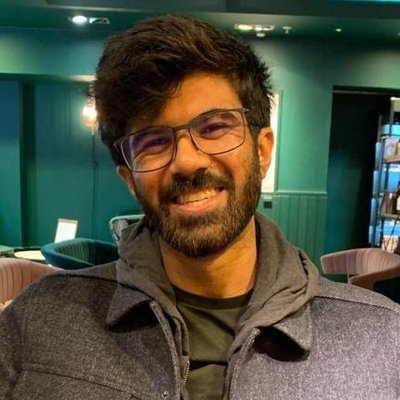

Jovan Varsani
Words
I was born in January 2002, in London. I lived in Seychelles from 2009 until I went to uni in 2020 in the UK. I’m now back in Seychelles, working in a construction manager type role, currently full time on a fancy hotel project. My mum is from Ahmedabad, and my dad is from Kutch, and I have visited often but not spent any extended periods of time there. I like playing tennis, and other racket sports, as well as short-form hiking and swimming. I’m interested in engineering things, obviously construction, but also mechanical systems, abstract structures and software systems. I’m generally close with the people around me, and the quality of those relationships are important to me. I’m interested in meeting people with similar or compatible values, and working towards a healthy and supportive relationship. Also, I am 180 cm tall.
Facts
- Education: University of Cambridge, MEng Civil, Structural and Environmental Engineering
- Father’s name: Surya Varsani, studied at the University of Warwick, UK
- Mother’s name: Foram Varsani